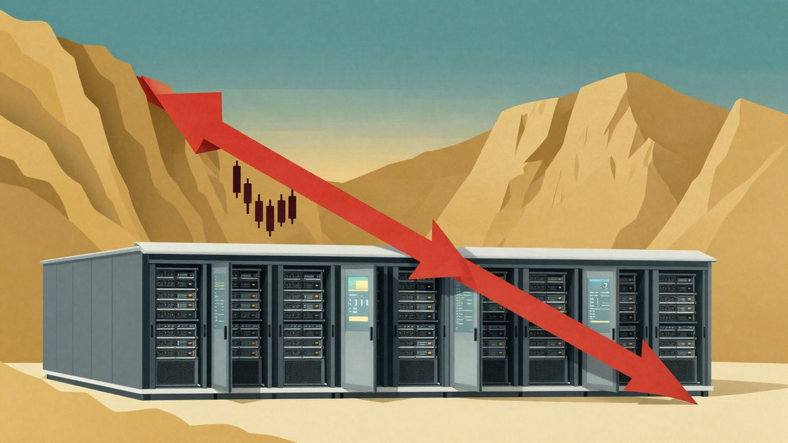

Objava o zabrani razvoja AI-a i pad burze: što stoji iza nje i zašto ne objašnjava sve

Zastupnica Yassamin Ansari pozvala je 4. studenoga na X-u na pauzu u razvoju naprednog AI-a i zabranu superinteligencije, a Elon Musk je prenio objavu. Dionice povezane s podatkovnim centrima potom su pale, no uzrok nije samo ta objava. Utjecali su i zakonski prijedlog koji je još u odboru, lokalni otpor gradnji centara te sumnje u isplativost ulaganja.
Zastupnica Demokratske stranke iz Arizone Yassamin Ansari 4. studenoga je na X-u napisala da bi Demokrati, čim preuzmu kontrolu nad Kongresom, trebali prvo pokrenuti tri stvari. To su pauza u razvoju naprednog AI-a, regulacija industrije koju opisuje kao izvan kontrole i zabrana razvoja superinteligencije. Objava je isprva prošla gotovo nezapaženo. Elon Musk ju je sutradan prenio uz komentar "It's a Brave New World", a Ansari mu je odgovorila "See you soon". Dionice povezane s izgradnjom podatkovnih centara potom su vodile pad na američkoj burzi, koja je imala najgori dan od carinskog šoka u travnju 2025.
Mnogi korisnici X-a krivili su Ansari. Takvo objašnjenje previše pojednostavljuje, jer se istodobno odvija nekoliko odvojenih procesa.
Zakon koji još nije prošao
Prijedlog nije samo Ansarin. Zastupnik iz Teksasa Greg Casar predložio je 24. rujna zakon o zabrani superinteligencije iz 2026., a Ansari je jedna od prvih supotpisnica. Zakon je još u odboru Zastupničkog doma. Napredni AI definira pragom od 10 na 25. potenciju operacija za treniranje, predviđa osnivanje posebnog tijela za AI, a do njegova osnivanja i donošenja sigurnosnih pravila zaustavlja treniranje i fine-tuning takvih modela. Trajno bi zabranio superinteligenciju i sposobnosti poput samostalnog istraživanja AI-a, otpora gašenju i samoizmjene. Za teške prekršaje predviđa do 20 godina zatvora. Autori se u obrazloženju pozivaju i na Muskova upozorenja o riziku od uništenja čovječanstva.
Lokalni otpor podatkovnim centrima
Na lokalnim izborima 3. studenoga oko 82 posto birača u Ashvilleu u Ohiju odbilo je okvirni dogovor s EdgeConneXom o dva podatkovna centra i plinskoj elektrani. Prema Ballotpediji, tog je dana u 10 država bilo 41 lokalno glasanje o podatkovnim centrima, a 40 ishoda išlo je prema ograničavanju gradnje.
Prema reviziji zakonodavnog tijela Virginije, jedan centar u vrhuncu gradnje može imati oko 1.500 radnika, a u pogonu oko 50 stalno zaposlenih. Cijena aukcije kapaciteta u mreži PJM, koja pokriva i Ohio, porasla je s 28,92 dolara po megavatu dnevno (oko 25 eura) za razdoblje 2024./2025. na 329,17 dolara (oko 285 eura) za 2026./2027. Na to utječu i povlačenje elektrana te promjene pravila tržišta, a ne samo centri. Dodatni je problem potrošnja vode za hlađenje.
OpenAI je 5. studenoga objavio da će za kampuse koje bude posjedovao i vodio sam snositi troškove struje i prateće infrastrukture. Obećao je i objavljivati podatke o potrošnji vode i struje te o buci.
Isplativost ulaganja
Musk je 25. listopada tvrdio da je tržište obveznica gotovo zatvoreno za tvrtke bez znatnih prihoda izvan podatkovnih centara. Za više od 200 novih cloud pružatelja predviđa velik broj propasti i spajanja.
Analitičar Gartnera Will Sommer procjenjuje da bi vlasnici podatkovnih centara do 2030. trebali ostvariti 8,5 bilijuna dolara (oko 7,3 bilijuna eura) prihoda za pokriće troškova i 12 posto povrata. Prema njegovoj prognozi, prihodi koji se mogu pripisati AI centrima neće biti veći od 3,6 bilijuna dolara (oko 3,1 bilijun eura), a manje od polovice pripast će vlasnicima infrastrukture. Gavin Baker iz Atreidesa smatra da manjak struje, čipova i kapitala usporava gradnju pa tako može spriječiti pretjeranu izgradnju.
Izvor: MyDrivers (快科技)
Povezani članci
 Musk je najavio da će američkoj djeci darovati po jednu SpaceX dionicu, procjena ide do 105 milijardi dolara19. listopada 2026.
Musk je najavio da će američkoj djeci darovati po jednu SpaceX dionicu, procjena ide do 105 milijardi dolara19. listopada 2026. Do četvrtine OpenAI-jeva internog prometa agenata nije bilo pod nadzorom23. listopada 2026.
Do četvrtine OpenAI-jeva internog prometa agenata nije bilo pod nadzorom23. listopada 2026. Ukrajinska policija razbila mrežu lažnih call centara: 135 Nijemaca prevareno za više od 4,3 milijuna eura9. studenoga 2026.
Ukrajinska policija razbila mrežu lažnih call centara: 135 Nijemaca prevareno za više od 4,3 milijuna eura9. studenoga 2026.